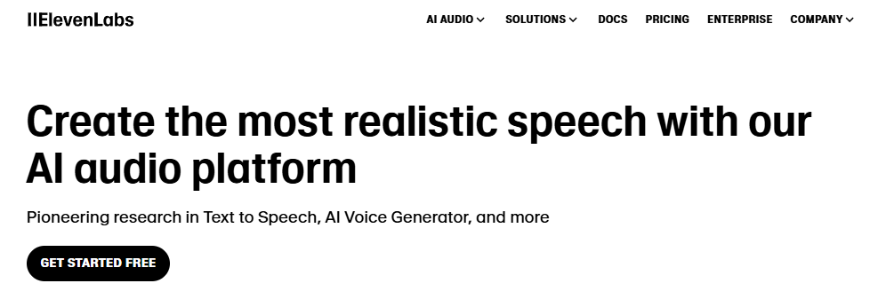

ElevenLabs
ElevenLabs är en gratis röstbaserad AI-tjänst. Detta är det perfekta valet för att skapa en säljpitch eller en annan voice-over med hjälp av AI. Verktyget kan även användas för att skapa ljudböcker som du kan använda om du inte har möjlighet att få ditt studiematerial uppläst digitalt till exempel. Det finns flera olika röster att välja mellan bland vilka du kan välja en som passar bäst i sammanhanget. Värt att nämna är att denna tjänst är gratis att använda men du har ett begränsat antal "credits" att använda per månad. Varje tecken kostar en credit och varje månad får du 10000 credits med deras gratisplan. ElevenLabs har stöd för över 30 olika språk där svenska är inkluderat. För att börja gratis, behöver du bara registrera ett konto med din mejladress.

För att skapa en ljudfil med ditt förbestämda manus, klickar du på "Text to Speech" i menyn till vänster. Därefter skriver du in den text du vill rösten ska läsa upp, sedan klickar du på "Generate speech". När det är klart kan du testa att spela upp ljudet och sedan ladda ner filen som mp3 längst ned i högra hörnet. I menyn till höger kan du välja bland många olika röster och göra flera andra inställningar. Testa även verktyget "Voice Changer".
Här kommer ett eget exempelljud med rösten "John - Scandinavian":
Om du vill skapa en ljudbok eller podcast kan du göra detta genom att klicka på "Studio" under "Products". Även här kan du välja röst och bifoga filer med text, du kan välja .docx och .pdf till exempel.